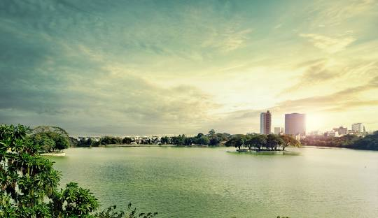
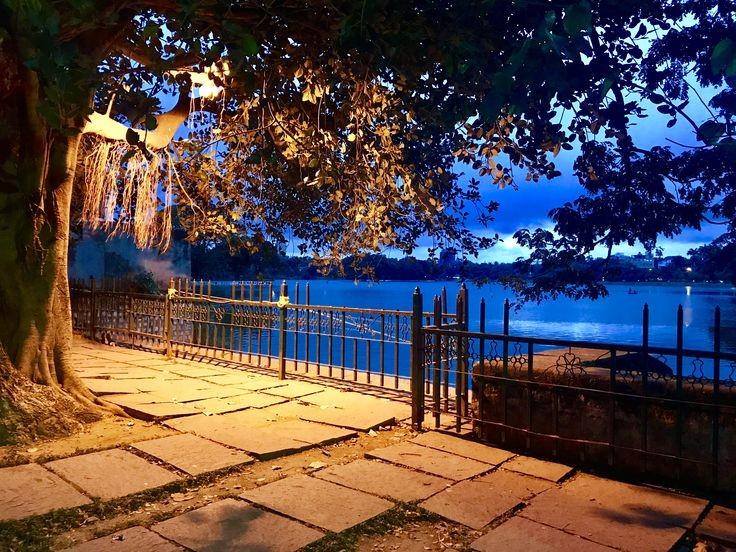

"Discover Tranquility at Ulsoor Lake – Bangalore’s Serene Escape in the Heart of the City"
Ulsoor Lake is one of the largest and most scenic lakes in Bangalore, located in the city’s vibrant heart. Known for its serene atmosphere, boating experiences, and lush green surroundings, it’s a perfect spot for relaxation and outdoor activities.Built in the 19th century by the British, the lake spans around 1.5 square kilometers and is a key feature of Bangalore’s heritage.
Scenic Views and Natural Beauty
Boating: Ulsoor Lake is famous for its boating facilities. You can enjoy rowboats, pedal boats, and shikaras while soaking in the natural beauty of the surroundings.
Flora and Fauna: The area is rich in biodiversity, with various species of birds, butterflies, and flora that make it a haven for nature enthusiasts and photographers.
Islands: The lake is dotted with small islands, adding to the charm and mystique of the place. Some islands have small temples and greenery, perfect for a peaceful retreat.
Key Attractions
Temples: The lake has a few small temples on its islands, such as the Someshwara Temple, which adds a spiritual touch to the serene atmosphere.
Jogging Track and Parks: The area surrounding the lake has well-maintained gardens and walking tracks, making it ideal for morning jogs or evening strolls.
Birdwatching: The lake is home to a variety of birds, making it an excellent spot for bird watchers.
How To Reach
By Bus: Several buses run to Ulsoor, and the lake is near Ulsoor Metro Station.
By Car: Easily accessible by car, located in the Ulsoor area of Bangalore.
Activities to Do
Boating: Take a relaxing boat ride on the lake, enjoying the calm waters and the beautiful landscape.
Photography: Capture the stunning sunrise or sunset views over the lake, the lush greenery, and the boating activity.
Bird Watching: The park is home to a variety of birds, making it an ideal spot for bird watchers.
Picnicking: Pack a picnic and enjoy a relaxing day by the lake with family or friends.
Visitor Information
Best Time to Visit: The best time to visit is early morning or late evening when the weather is pleasant, and the lake is less crowded. Weekends tend to be busier, so early visits are ideal.
Entry Fee: There may be a nominal fee for boating or visiting the park. It’s best to check for updated entry fees online.
Local Cuisine
Cafes and Food Stalls: There are also small cafes and food stalls near the lake offering refreshments for visitors to enjoy after a stroll or boat ride.
Nearby Eateries: Explore local South Indian cuisine at nearby restaurants like MTR and VV Puram Food Street.
Visitor Tips
Respect the Environment: Keep the lake and surrounding areas clean, especially while picnicking.
Safety: Ensure to wear a life jacket while boating for safety. Always follow the boating guidelines provided at the lake.
Photography: While photography is allowed, please respect other visitors' privacy and be mindful of the environment.